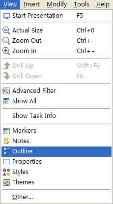
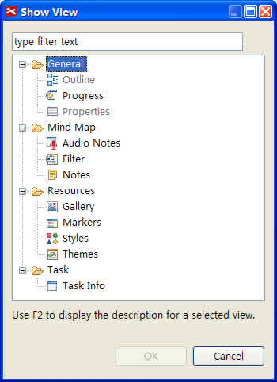

XMind has 13 different views to help you work on different facets of your maps and display information in different ways. They are Outline, Properties, Filter, Notes, Taskinfo, Gantt, Styles, Theme, Audio Notes, Gallery, Image Search, Markers, and Web Browser.
You can easily open these views and position them as required. Here's how:
To open a view via menu:
- Choose View on the menu.
- Select the view you need.
- If can not find what you need, click 'Other...' to show all views.
- Select the view you need.


To change view's position with mouse:
- Select the View.
- Left-click and hold the mouse to move the view. You can place the view anywhere you want, even out of the XMind window.